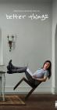

What is this site?
Stephen's Profile
Browser Extension
Stephen Klancher
Recent
Overall
Year Overview
Series
Lists
Better Things
List contains: 27 items, 0.5 hours.
Seasons:
2
|
3
|
4
|
Title Search (4+ characters):
Group:
None
Example Group: Me and Stephen
Who's seen it:
No filter
Everyone
No One
Anyone
Anyone Has Not
Who's commented:
No filter
Everyone
No One
Anyone
Anyone Has Not
Netflix:
No Filter
Available for Instant Watch
Netflix Link Known
Netflix Link Unknown
Missing Data:
No Filter
Runtime
Season
Release Year (YYYY) or Decade (YYYx):
Sort:
Normal
Newest Episodes First
Episodes in Order
Recently Watched First
Watched in Order
Newest Releases First
Releases in Order
Stephen Klancher
...has seen 0
...has not seen 0.5 hours
Timeline

Season 2
September
Airs on 2017-09-14
S2 - E1 of
Better Things
Stephen Klancher
:
Rising
Airs on 2017-09-21
S2 - E2 of
Better Things
Stephen Klancher
:
Robin
Airs on 2017-09-28
S2 - E3 of
Better Things
Stephen Klancher
:
Sick
Airs on 2017-10-05
S2 - E4 of
Better Things
Stephen Klancher
:
Phil
Airs on 2017-10-12
S2 - E5 of
Better Things
Stephen Klancher
:
Eulogy
Airs on 2017-10-19
S2 - E6 of
Better Things
Stephen Klancher
:
Blackout
Airs on 2017-10-26
S2 - E7 of
Better Things
Stephen Klancher
:
Arnold Hall
Airs on 2017-11-02
S2 - E8 of
Better Things
Stephen Klancher
:
White Rock
Airs on 2017-11-09
S2 - E9 of
Better Things
Stephen Klancher
:
Graduation
Airs on 2017-11-16
S2 - E10 of
Better Things
Stephen Klancher
:
Season 3
Chicago (2019)
Airs on 2019-02-28
S3 - E1 of
Better Things
Stephen Klancher
:
Holding
Airs on 2019-03-07
S3 - E2 of
Better Things
Stephen Klancher
:
Nesting
Airs on 2019-03-14
S3 - E3 of
Better Things
Stephen Klancher
:
Monsters in the Moonlight
Airs on 2019-03-21
S3 - E4 of
Better Things
Stephen Klancher
:
No Limits
Airs on 2019-03-28
S3 - E5 of
Better Things
Stephen Klancher
:
What Is Jeopardy?
Airs on 2019-04-04
S3 - E6 of
Better Things
Stephen Klancher
:
Toilet
Airs on 2019-04-11
S3 - E7 of
Better Things
Stephen Klancher
:
Easter
Airs on 2019-04-18
S3 - E8 of
Better Things
Stephen Klancher
:
The Unknown
Airs on 2019-04-25
S3 - E9 of
Better Things
Stephen Klancher
:
Show Me the Magic
Airs on 2019-05-02
S3 - E10 of
Better Things
Stephen Klancher
:
Get Lit
Airs on 2019-05-09
S3 - E11 of
Better Things
Stephen Klancher
:
Shake the Cocktail
Airs on 2019-05-16
S3 - E12 of
Better Things
Stephen Klancher
:
Season 4
Steady Rain (2007)
Airs on 2020-03-05
S4 - E1 of
Better Things
Stephen Klancher
:
Escape Drill
Airs on 2020-03-12
S4 - E3 of
Better Things
Stephen Klancher
:
Carbonara
Airs on 2020-03-26
S4 - E5 of
Better Things
Stephen Klancher
:
Father's Day
Airs on 2020-04-16
S4 - E8 of
Better Things
Stephen Klancher
:
Listen to the Roosters
Airs on 2020-04-30
S4 - E10 of
Better Things
Stephen Klancher
:
Watched an episode not known by IMDb?
Season:
-
Episode:
Date:
Comment: